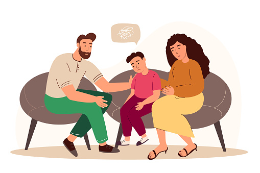

COMMUNICATING WITH TEENAGERS
I visited another town a few years ago. My friend suggested that I meet a support group she had held for many years after I had rested for a few days. These groups assisted parents of teenagers in better understanding how to raise their children.
After meeting and listening to the parents, I recommended that she also host teenagers. This would allow us to better understand their problems, give them a safe place to express themselves, and equip them with the tools they need to interact effectively with their parents, peers, and society.
In these two support groups, we had one case that I’d like to share. Not only was this adolescent’s communication inefficient, but it was also harmful. It is hurtful to both the parent and the adolescent.
The teenager was a 17-year-old girl. She was easily angered. Both of her parents had raised her. She was enraged since her mother had not communicated with her in two weeks. The mother’s only activity during these two weeks was to send the brother with any information that the mother required from this girl.
At the time, the girl’s father was working and only came home on weekends. When she tried to enlist the father’s assistance in resolving the communication issues, he merely told her to respect and obey her mother.
She felt unloved and thought something was wrong with her when she didn’t feel supported by both parents. This is why she didn’t feel understood by either. She yearned for someone who would accept her and, at the very least, allow her to interact.
The teenager’s holiday season was just three weeks long. Since closing school, she had only spoken with her mother twice. She felt she had wasted two weeks by being alone and isolated. She longed to return to school at this moment because she had a large number of friends who cared about her and with whom she had good communication.
The mother’s reason for the disappointment was because the girl had stayed too long at the market. When her mother sent her for grocery shopping, she ran into a friend, a fellow teenager, and they ended up chatting for far longer than they needed to. The mother’s disappointment is what led to the silent treatment.
This child explained that she used to beg her mother to stop giving her silent treatment when she was alone in the house and had no one to talk to. She added that when the mother was upset with one of the children, she demanded that the other children have little contact with the child who had made a mistake.
The girl’s mother on the other hand complained that her two teenagers were too much work for her and had become a new cause of stress for her. They wouldn’t respond when she tried to communicate with them.
They would both leave silently and go to their rooms after the mother became enraged and yelled at them. This is when she came up with a new strategy: silence. When her teenagers made mistakes, she preferred silent treatment. This one, she thought, had worked because it had them begging for forgiveness on their knees.
I’m sure this parent’s situation isn’t unique. This, and other difficulties, are faced by many other parents who battle to control their own emotions when triggered by their own teenagers. While I agree that dealing with teenagers and speaking with them involves tact, patience, and talent, I also appreciate that it is possible to do so effectively.
In teenage, children begin to build their own identity. They want to be independent of their parents. It’s normal and expected that your thoughts, opinions, and actions would differ. This understanding enables a parent to come to peace with their child’s abrupt change in behavior.
Because of the changes in their hormones, they are experiencing new emotions. It is the parent’s responsibility to communicate in ways that assist the child in learning to regulate the overwhelming emotions he or she is experiencing for the first time.
I’ll share some pointers on how to communicate with teenagers more effectively:
Create boundaries and model communication with teenagers at home when interacting.
If you don’t want them to use silent treatment or yell back, set a good example for them. If you yell, anticipate them to either yell back, walk away while you yell, or be rebelliously silent in extreme circumstances of fear.
If you have modeled proper calm and strong communication when they shout, remind them that you do not shout at them and it is not okay for them to shout; they need to take time away, calm down, and you can discuss the matter again another time.
Communication with teenagers needs to improve conflict resolution and decision making.
Teenagers are in the process of maturing and are one stage away from adulthood. As a result, it is critical that your communication facilitates conflict resolution and decision-making. As much as possible, refrain from telling them what they must do. Instead, collaborate with them, allowing them to express their ideas and what they believe would work.
Instead of dismissing their ideas, negotiate with them, share different possibilities, and think through the best of them. This is the most difficult route, but it is also the most effective in terms of developing mental skills and increasing their competency levels.
When communicating with teenagers, ask questions instead of making assumptions.
When you don’t understand something, ask non-threatening questions. What will society think of us/you, for example? This is both frightening and judgmental. It is more appropriate to offer open-ended inquiries like, “I see you appear to appreciate this new type of music, a new way of wearing, what makes you prefer them?”
This allows children to open up and share their world with their parent. When teenagers feel understood and not judged, they open up, allowing the parent to guide, reason, share information, and help the teenager in the area in which they require support.
When communicating with teenagers, be open-minded and make effort to stay emotionally bonded.
Teenagers begin to identify with peers rather than their family in their drive to develop their own identity. This is because they feel more understood and accepted by their peers. As a parent, acknowledge that you are not the sole influence at this time.
Having understood their world, your open-mindedness will help you guide and support your teenagers.
Parents who keep away from control improve their communication with the teenagers.
When a teenager feels that their parent is controlling them, they revolt. If a parent is facing increased rebellion, the teenager may be feeling unheard, misunderstood, or unloved. At this point, the parent may need to learn to negotiate as opposed to just giving directions, or making demands. If the parents insist on maintaining control, the youngster will be lost to his or her peers (mostly negative peer pressure).
The goal of interacting with teenagers does not have to be compliance (them doing exactly what you need to be done, how you need it done, when you need it done). In truth, this is a rare occurrence. The purpose of communication is to help them understand your perspective, as well as to help you understand theirs so that you can both agree on how to proceed.
When communicating with teenagers, help them see that neither you nor them is perfect.
Children who perceive you as a hero, a great parent, are still living in a fantasy and maybe more concerned with pleasing you than with enjoying their life. Be honest and open with your teen about your struggles, particularly those you faced as a teenager.
This makes them feel more normal and allows them to move past their “passivity.” It encourages them to speak up more about their struggles, and you can work together to find solutions. The most important aspect is that their mistakes become learning opportunities rather than shameful experiences.
Parenting teenagers is dynamic – learn new better ways of communication that work.
Finally, you obviously grew up in a different era than the world in which youngsters are growing. If you have to help them, seek to understand their world. For example, many teenagers nowadays will tell you that they have no problem with LGBTQ, even if their parents are against it.
Other parents who hold certain religious beliefs face difficulties when their teenagers deviate from the path they have chosen. In cases where the parent is adamant that this is evil/unacceptable and that there can be no discussion about it, the parent misses an opportunity to understand the world of the child.
A teenager we invited over to our house a few months ago assisted us in understanding some new dynamics. He revealed how he had tried every drug on the market at the time. This same adolescent has been dating and then dropping girls after 6 months because he does not want to be attached to any. We listened, laughed, asked questions, and learned.
He was no longer doing drugs at the time of sharing; he had quit. He had received support from his family, which assisted him in making a better decision. When you understand the new dynamics, you’ll be able to tell what you can handle as a parent and what you can’t, and you’ll be able to enlist the help of someone you know who can handle those areas to assist your teenagers.
By Joan Kirera - Psychologist/ Marriage and Family Therapist.